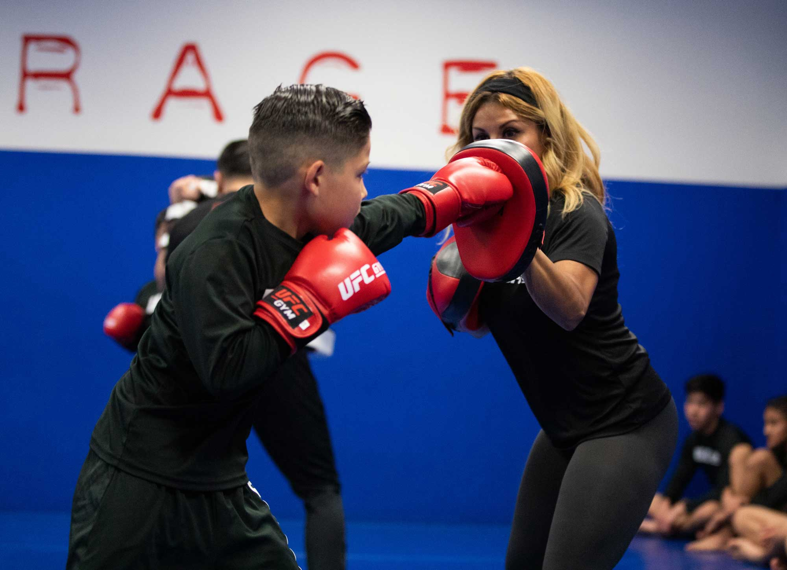

Youth · 13 yrs · Orthodox · Rage Boxing Workshop

To Mateo — and to the people who get him to training,
Over the last twelve weeks the coaching team has watched Mateo grow into the kind of young boxer who turns up to a session ready to think, not just to throw. This report is the long version of that observation — written in plain language so the picture is the same whether you read it at the gym or at the kitchen table.
We measure two kinds of things. The first is what the body is doing — height, weight, wingspan, and a small battery of standardised fitness tests that we re-run every eight weeks. The second is what the boxing is doing — the way the jab returns home, how composed Mateo stays when a partner mistimes a cue, whether the rear hip rotates through the bag. Numbers tell part of the story; the coach's notes do the rest.
Two things to keep in mind. One: a small wobble in a number across one block doesn't mean anything. Watch the direction over months, not weeks. Two: "stable" is not "stuck". Some attributes are meant to plateau while we layer something new on top.
Proud of where he's at. Excited about where he's going.
— Coach Marcus Reyes
Lead Coach · Workshop Boxing
On Vertex's 100-point scale this is roughly the move from capable to confident. Mateo's score has climbed every block for the last six months — the rate is steady, not a spike.
In one sentence: Mateo is the most coachable he's ever been, and the boxing has caught up with the attitude.
At thirteen, the body is still doing a lot of the work for us. The four numbers below tell us where Mateo is right now and where a healthy growth curve lands him by next May.
What this means in plain English: Mateo is on a steady, age-typical growth curve. The dashed line is what he should weigh in a year if the curve continues; the shaded band is the realistic range. A slightly longer wingspan than height is a small advantage in boxing — it lets him land the jab a fraction earlier than opponents of the same height. We don't optimise for size at thirteen. We optimise for habits.
These are standardised fitness tests used across youth sport. Same protocol every time. The aim is to watch the change over months, not chase a record. All eight tests are trending the right way.
How to read this page: the big number is where Mateo sits today. The small number is how much he's moved in the last fourteen months. "Higher is better" vs. "Lower is better" tells you which direction the sparkline should slope — we've already flipped the slope so improvement always points up.
The blue shape is where Mateo started the season. The cyan shape is now. Wider is better. The biggest expansions are in Fundamentals and Partner Work — both of which reflect the quiet, repeatable progress we want at this age. Nothing flashy. Just bigger.
Vertex tracks eight boxing-specific attributes per athlete. Three are pulling away from the rest — these are the ones that have shifted the most over the last twelve weeks, and the ones coaches keep volunteering in session notes.
Why these three matter together: A jab that returns home, a rear hip that finishes the cross, and a guard that stays up — that's the spine of orthodox boxing. The fact that all three are climbing in parallel is how we know it's the technique improving, not just the body getting bigger.
Comparisons to professional fighters are illustrative, not predictive. We pick a pro whose style maps onto the young boxer's current habits so that "what to study next" has a clear, public reference.
Both move before they punch. The angles set up the shot — the shot doesn't create the angle.
Calm in chaotic exchanges. Resets between flurries instead of riding adrenaline.
Reads the partner's pattern before committing — visible in mitt-cue response time.
Lomachenko throws far more punches per round. Mateo is selective by temperament — not a flaw, just a style choice to be aware of.
Reference is illustrative. Vertex makes no claim of affiliation with the named professional fighter.
At thirteen, the biggest predictor of where a boxer ends up isn't the punch — it's whether they're still showing up in three years. Mateo's enjoyment of training is the most important number in this report. Please keep doing whatever you're doing to protect it.